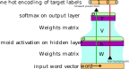
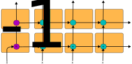

Sequence Models
The Models We’ve seen
The models we (tried) training on Friday looked something like this:

There could have been more or less layers in between the input and output, and we could have had different activation functions. But essentially, we were trying to classify each verb one at time in isolation.
What about sequences?
For other kinds of tasks, though, this “one at a time in isolation” isn’t a great idea! Let’s say that we were trying to build a part of speech classifier, where we would assign each word in a sentence to a part of speech. The words that come before and after contain crucial information for that purpose.
I went to the bank. (should be Noun)
You can bank on us! (should be verb)
We could approach this problem a lot like the ngram models we were working with before, and just concatenate together the two word vectors preceding our target word.
Recurrent Neural Networks
But what people found to be a little bit more effective was to use “recurrent neural networks” or RNNs. An important conceptual addition for RNNs is that we don’t have to map our hidden layer to only the output layer. If our matrix V maps the hidden state h out to the prediction layer, we could use another matrix U to map our hidden state out as input to the next word. The network processing the second word then has two input sources: the incoming word vector and the transformed hidden state from the previous word.
The idea of what’s going on here is a little bit of information about the previous word is being passed on to the next word and affecting its hidden state, which then gets mapped to the prediction layer.
More technically speaking, order of operations here is:
the values in the hidden layer \(h_{t-1}\) are being transformed a bit by the matrix \(U\), and then passed forward. (\(Uh_{t-1}\))
the word vector at time \(t\), \(w_t\), is being transformed by matrix \(W\) and fed into the network. (\(Ww_{t}\))
The output of \(Ww_{t}\) is then elementwise added to the output of \(Uh_{t-1}\) and passed through an activation layer to make \(h_t\). (\(h_t = \sigma(Ww_t + Uh_{t-1})\)).
Then, \(h_t\) gets sent off to the output layer, by being multiplied by \(V\) and passed through softmax (\(y_t = \sigma(Vh_t)\))
\(h_t\), also gets passed onto the next word’s network by \(U\) (\(Uh_t\))
The matrices of weights which pass word vectors and hidden states into and out of the networks, \(W\), \(U\) and \(V\), are the same throughout the whole process, so it’s their weights that get updated by backpropogation.
The detail of every matrix, vector, and activation function often get elided over in simplified diagrams of RNNs which depict them as a sequence of cells.
The thing to assume is that every arrow indicates a matrix multiplication followed by an activation function.
This first RNN diagram represents a “many to many” model. In the illustration example, we’re trying to classify each word in the sequence with a part of speech, using a little bit of information that came from the word before.
There are other ways you could wire up an RNN. For example, maybe we want to feed it words from a product review, one by one, and have it make just one prediction of how many stars to give it at the very end. The only tweak we’d make is to not send the hidden state to output until the very last cell.
Or, if wanted a model that would output a new sequence of words after being given an input sequence of words (e.g. summarizing a long article into a short paragraph, or just continuing a story after being given a prompt), you would tweak this architecture to take input word vectors for the first however many nodes, then just generate output vectors for the rest.
Or, if your RNN isn’t performing well, you could try stacking one sequence on top of the other.

Setting up an RNN in Tensorflow
Setting up an RNN network in tensor flow is a bit more involved than the models we’ve looked at before (see this tutorial on text generation), but the RNN cell itself is available at tf.keras.layers.SimpleRNN().
Long Short-Term Memory
One issue with RNNs is that they have a relatively short “memory”. The hidden state from the previous cell is always added to the input from the current cell, but isn’t passed along any further, except to the extent its values influence the current cell’s hidden state. It also means that longer term dependencies can get washed out in training. For example, if we’d built an RNN to try and guess the final word of each of these sentences, the most important information to guess the right answer is many words before the guessing point.
Bob is a man who I’ve known for a very long time, and after all we’ve been through, I feel comfortable speaking my mind to
[him? her? them?]I grew up in Philadelphia, and even though it’s been many years since I’ve actually lived there, I still cheer for our Major League Baseball team, the
[Phillies? Yankees? Dodgers?]
If the simple RNN model made a bad prediction for this final word, the error would have to propagate through every node back to the word highlighted in red in order to change the way information about that word gets passed forward. The problem is that the error signal at time \(t\) gets weaker and weaker the further back it travels through the chain of RNN cells.
In an attempt to provide a sequence of cells a longer “memory”, Long Short-Term Memory, or LSTM models try to explicitly manage “forgetting” and “updating” information, with a “cell state” that gets minimally adjusted and passed all the way down the chain of the sequence.
Let’s look at each of these “gates”
Forget and Update Gates
The forget and update gates both contain the same basic operations. The output state from the previous cell and the new input are added together (after each being multiplied by a matrix) then passed through the sigmoid function, which maps all values to between 0 and 1.
The output from the forget gate is immediately elementwise multiplied by the previous cell state. Where the output from the forget gate is close to 0, the information from the previous cell state will also be zeroed out, “forgetting” the information. Where the output of the forget gate is closer to 1, the information in the cell state is “remembered.”
The output from the update gate is used to modulate the new information from the add gate.
The add gate
The “add gate” decides what new information is going to get added to the cell state. The previous output state and the new input data get pointwise added, and then passed through a tanh activation function, which converts all of the values to range between -1 and 1.
The output from this gate gets elementwise multiplied by the output from the update gate. So, some of the values between -1 and 1 are getting zeroed out, while others are passing on as-is.
After this multiplication, this new information gets added to the cell state.
Output
After removing some information with the forget gate and adding some information with the update & add gates, the cell state is both passed on to the next LSTM cell, and is combined with the previous hidden state and the new data to generate the new hidden state.
This new output state can then be used for whatever purpose you’re building the network for. It could be used in a many-to-many model to predict part of speech, or only be used in the last cell for classification of the whole sequence.
Using LSTMs in Tensorflow
Again, there’s just an LSTM layer available at tf.keras.layers.LSTM().